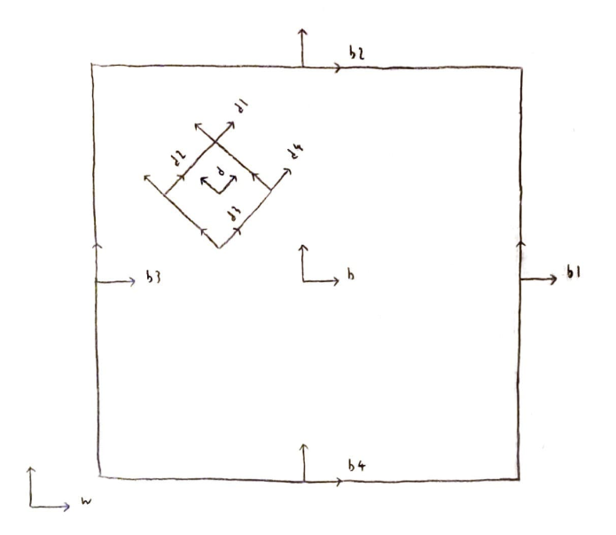
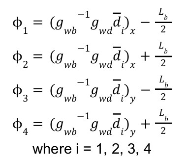
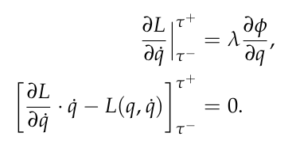

Dice in a Box Simulation
Overview
In this project, I simulated the dynamics of a dice in a box. I defined the reference frames for the dice and the box, and used them to calculate the Lagrangian, Euler-Lagrange equations, constraints, and the impact update equations. The trajectories of the configuration variables were then animated to simulate the dice bouncing around in a box.
Drawing of the System

Frames
- w: World frame
- b: Box frame
- d: Dice frame
- b1, b2, b3, b4: Frames of the 4 sides of the box
- d1, d2, d3, d4: Frames of the 4 corners of the dice
Rigid Body Transformations
- g_wb: Transformation from the world frame to the box frame
- g_wd: Transformation from the world frame to the dice frame
- g_bb1: Transformation from the box frame to the center of the right side of the box
- g_bb2: Transformation from the box frame to the center of the top of the box
- g_bb3: Transformation from the box frame to the center of the left side of the box
- g_bb4: Transformation from the box frame to the center of the bottom of the box
- g_dd1: Transformation from the dice frame to the upper right corner of the dice
- g_dd2: Transformation from the dice frame to the upper left corner of the dice
- g_dd3: Transformation from the dice frame to the bottom left corner of the dice
- g_dd4: Transformation from the dice frame to the bottom right corner of the dice
Calculations
Euler-Lagrange Equations
Since rotational inertia is involved for both the box and the dice, the rotational kinetic energy needs to be calculated. In order to get the Euler-Lagrange equations, we first define the 6x6 inertia matrices of the box and the dice (note that the 4 sides are treated as 4 point masses for both the box and the dice), compute the body velocities of the two objects, find the kinetic energies (using the body velocities) and the potential energies of the two objects, compute the Lagrangian (total kinetic energy - total potential energy), calculate the left hand side of the Euler-Lagrange equations by doing dLdqdot.diff(t) - dLdq, set the right hand side of the Euler-Lagrange equations as the external forces, and finally equate them.
Constraints
In order to calculate the constraints, we do a check to see whether the coordinates of a corner of the dice is within a certain range. For example, to detect if the upper right corner of the dice (d1) has impacted the box, we check the coordinates of d1 in d and see if they are between -L_b / 2 and L_b / 2 where L_b is the length of the side of the box. The constraints follow the formula below:

External Forces
For the external forces, we define the force in the x-direction as 0, the force in the positive y-direction as the force of gravity on the box (4 * mass of the box * g), and the torque as mass of the box * g * sin(pi * t/4) * 0.2. These forces allow the box to be in the center and rotate in the simulation.
Impact Update Laws
In order to calculate the impact updates, we first define dummy variables for the configuration for before and after impact (q(tau-), qdot(tau-), and qdot(tau+)), compute dLdqdot,dPhidq, and Hamiltonian, evaluate them using dummy variables for before and after impact, and finally set up the impact update equations and solve for them. The equations are defined as:

Results of the Simulation
The dice starts at rest and falls under gravity. One of its corners eventually hits the bottom of the box, and the box starts rotating because the external forces are being applied to it. The dice experiences multiple collisions with the box’s walls, and continues to rotate and translate. In the simulation, the impacts happen only at the corners of the dice. This behavior makes sense because the initial conditions are set as (0, 0, 0) for the box and (0, 0, pi / 4) for the dice.